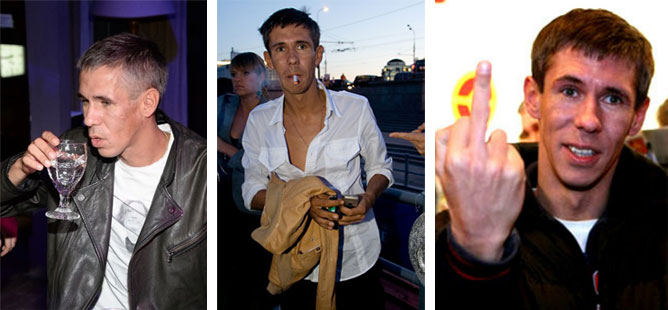

Что заставило Алексея Панина бросить пить?
Ленинский районный суд Санкт-Петербурга амнистировал актёра Алексея Панина, в честь 70-летия победы в Великой Отечественной войне.
Напомним, Алексей Панин попал под арест и был наказан штрафом в 30 тысяч рублей. Не так давно на своём чёрном BMW он устроил погоню за полицейскими машинами, снёс шлагбаум, не оплатив за проезд по платной трассе.
Алексей Панин широко известен своими громкими скандалами. Он громил кафе, ругался, бегал голым по гостинице, на глазах своих родителей избивал прохожих, продавщиц и поклонниц. Всему виной затяжной алкоголизм актера. Перечислять похождения “быдло-актера” можно долго.
В эфире программы «Касается каждого» актер обматерил владельца Chevrolet Aveo. Тот попросил разрешения пересесть на другой диван, так как «ему неприятно нюхать перегар», Панин ответил кратко: «Иди нах… отсюда, раз неприятно». В алкоголизме артиста упрекали все, но Панин будто не слышал ни родных, ни близких.
“У меня были проблемы в жизни, и мне казалось,что с помощью алкоголя я могу их решить. В промежутках между стаканами я ездил к экстрасенсам и к психиатру”. - признается Панин.
Десять лет назад он пытался «закодироваться» и покончить с постоянными пьянками, но тогда актера хватило только на два с половиной года. Беспробудное пьянство актера довело его до “белой горячки”. Отлежавшись в клинике, Панин продолжал уходить в запои. Газеты писали, что Алексей пытался покончить с собой. Он рушил семью и карьеру. Однажды звездный алкоголик публично признался, что ходит перед дочкой совершенно голый.
Неизвестно, сколько бы еще продолжалось злостное пьянство Панина, если бы мать артиста Татьяна Власова не начала давать ему одно действенное средство.
Сначала Алексей не знал о том, что в его еду и напитки подмешивают раствор специальных таблеток для лечения алкоголизма. Зато эффект он заметил уже на первой пьянке. Собрав компанию, чтобы отметить освобождение из-под ареста, актер попытался выпить рюмку дорогой водки. Но не смог!
Мать Панина призналась, что устала смотреть, как погибает ее сын, и решилась на крайние меры. На лечение без его ведома. Узнав о 100% натуральном препарате от подруги, Власова уверена, что вреда сыну не причиняет.
"В состоянии опьянения не страшно умирать. А вот жить - страшно", - приводит она в пример слова сына.
Чудесное преображение актера вскоре заметили и звезды шоу-бизнеса: на последней вечеринке у друга Олега Яковлева, Алексей вел себя на удивление прилично и пил только воду и сок. Это навеяло на мысль, что актер взялся за ум и бросил пить. Что произошло, артист не стал комментировать.
Многие подумали, что это связано с освобождением из-под ареста. И только избранные знают, в чем секрет “завязки” Панина.
“Вы знаете, не пить, это хорошо”, - говорит Панин. - “В моем случае, это, вообще, необходимость. Сейчас чувствую себя человеком. А был момент, когда казалось, что я умру от алкоголя или убью кого-нибудь в пьяном забытьи”.
Спасительные шипучки помогли актеру пересмотреть свой взгляд на жизнь. Его просто больше не тянет выпить. Как отрезало. Сейчас актер проходит курс лечения в домашних условиях. Но эффект можно наблюдать уже сейчас.
Секрет препарата в редких натуральных компонентах в составе.
Дисульферат — превращает алкоголь в организме в токсический яд, заставляющий тело испытывать дискомфорт и отторжение.
Выжимка гриба-навозника — вызывает в теле учащенное сердцебиение, прилив крови к телу, багровость лица, рвоту и тошноту каждый раз, когда в организм попадает алкоголь.
Корень любистока — обладает мочегонным, очищающим действием, помогает почкам и печени вернуться в здоровое состояние.
Побеги плауна-баранца — содержат 7 алкалоидов, флавоноидов и других соединений, купирующих алкогольную зависимость и все проявления алкогольной “ломки”.
Выжимка из листьев Падуба Широколистного — природный антиоксидант и антибиотик, восстанавливающий нарушенные алкоголем обменные процессы в организме.
Способ применения невероятно прост!
Без кодирования, таблеток и наркологов. Нужно только пить разведенную шипучую таблетку по утрам и вечерам в течение нескольких недель.
"Признаюсь, у меня в жизни были проблемы с алкоголем. Началось из-за личного, а закончилось тем, что многие начали бояться меня снимать", - откровенно заявил Алексей.
Актер многое поменял в своей жизни. Теперь Панин совсем не посещает “ночные гулянки”, так как понял, что делать в них, по большому счету, уже нечего.
“Я считаю, Алексей - большой молодец, - восхищается давняя подруга и коллега актера Панина Мария Шукшина. - Ведь Панин ужасно много пил, алкоголь чуть не уничтожил и его карьеру, и его самого как личность. Его маме надо поставить памятник! Какое счастье, что таблетки помогли, они действительно эффективны. Я смотрю на Лешу и вижу, что он другой человек. Здоровый, непьющий, заботливый”.
Если смог он, значит сможете и вы!
Никогда еще лечение алкоголизма не было таким простым!
Юлия
У меня отец алкоголик с большим стажем был (около 20 лет), с ним случались крупные запои и я покупала ему эти шипучки. Результат - от одного запаха алкоголя его тошнит.
Мирослава
Очень хорошее средство Codirex! я мужа вывела из запоя только благодаря этим волшебным таблеточкам. Из запоя выводит за один-два дня.
Михаил
Я Алексея уважаю!! Знаю, как синька может жизнь испортить. Когда их пьешь - выпить не возможно!!! Я так вообще никогда не блевал!!!!
Виктория
Я тоже, как мать Панина, начала давать сама его в тихоря, потом, когда муж узнал, допивал курс сам уже по желанию. Столько денег сэкономили
Валентина
Вы смелая! А я даже если пытать будет - не признаюсь, что давала лекарство. Мне главное, что результат есть. Не пьет уже 1,5 года
Стася
Прекрасный актер! Обожаю фильм жмурки с его участием. Жалко его…
Пастерначий
Чего жалеть этого дурачка???? Сам все пропил, сам все прос...ал. У него все было! Даже если пить бросил, от такой репутации не отмыться уже!!
Ирина Питер
Раньше мне он очень нравился, но после того, как я узнала о его личной жизни и его поведении вне сцены - потеряла к нему всякую симпатию. Очень жестокий человек.
Евген
Вот раскудахтались! С каждым бывает. Алексей классный парень, да и актер он замечательный! А то, что выкарабкался - молодец! Так держать!
Лилия
Опущу разные подробности, здесь все знают, что такое пьющий мужик в доме. Купила я такие же шипучки, начала их давать мужу тайно. Я их добавляла в еду, главное не горячую и не алкогольную, конечно, например, в компот или просто воду. К моему большому удивлению, он перестал пить вообще! Говорит, что разонравилось!!! Просто чудо, а не таблеточки. Если у кого есть такая проблема, рекомендую Codirex!
Ильгиз
Мне не хочется говорить о Панине как об актёре, моё мнение ещё не сформировалось, Но мне нравится его честность. Не легко признаться в недостатках вообще, а уж о пороках и говорить нечего. Спасибо за искренность! И за рецепт от пьянства!
Валерия
Надо же! Я обязательно попробую своему дать. Устала от его постоянного пьянства. Только от водки просохнет, сразу пивом заливается!! устала терпеть!
Пионер
Слышал, что много подделок. Покупайте только в одном месте, не ведитесь!!!
Лама-мама
А где покупать???
Пионер
Да в статье же ссылка!